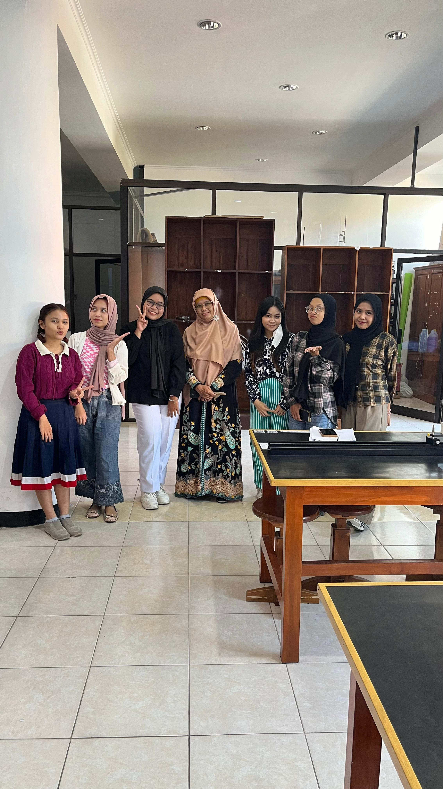
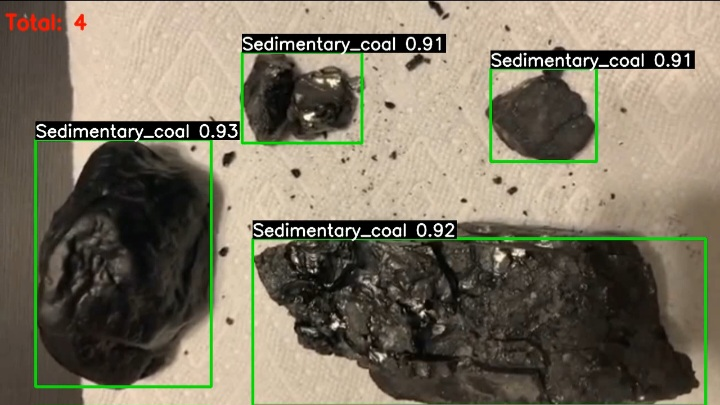
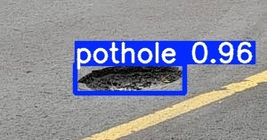
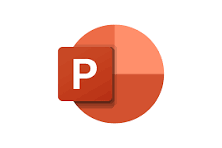
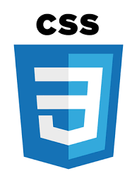
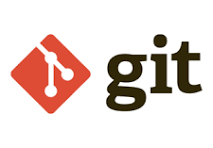
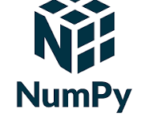
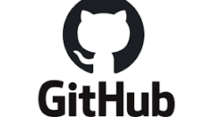

Halo, saya
Robiatul Isnaini
Teknologi Informasi, Pengolahan Data & Pengembangan Aplikasi
Lulusan Fisika Komputasi

Halo, saya
Saya merupakan lulusan S-1 Fisika Universitas Airlangga dengan peminatan Fisika Komputasi yang memiliki ketertarikan pada bidang Teknologi Informasi, khususnya pengembangan aplikasi, pengelolaan database, pengolahan informasi, dan visualisasi data. Memiliki pengalaman mengumpulkan, mengolah, dan memvalidasi data operasional selama magang di PPSDM MIGAS Cepu, dengan mengidentifikasi potensi penghematan energi sebesar 43,12% serta estimasi penghematan biaya listrik sebesar Rp405.462 per hari. Selain itu, memiliki pengalaman dalam pengelolaan data laboratorium serta mengembangkan berbagai proyek teknologi, meliputi aplikasi web menggunakan HTML, CSS, JavaScript, Python, dan FastAPI, pengelolaan database PostgreSQL, serta dashboard interaktif menggunakan Power BI. Terampil dalam menyusun informasi secara sistematis, mengembangkan solusi berbasis teknologi, dan melakukan evaluasi sistem dengan pendekatan analitis, teliti, serta berorientasi pada pemecahan masalah.

Departemen Fisika
Beberapa proyek pilihan yang mencerminkan kemampuan berpikir analitis dan keterampilan teknis saya.

Membangun website portofolio responsif menggunakan HTML, CSS, dan JavaScript untuk menyajikan profil, pengalaman, keterampilan, serta dokumentasi proyek secara terstruktur. Mengembangkan navigasi dan tampilan antarmuka agar informasi dapat diakses dengan mudah oleh pengunjung.
HTML · CSS · JavaScript · Responsive Web Design
Lihat detail proyek Lihat di GitHub
Mengembangkan aplikasi web pencarian rumah kos menggunakan HTML, CSS, dan JavaScript dengan fitur pencarian berdasarkan lokasi, harga, dan tipe kos, serta halaman detail informasi hunian dan autentikasi pengguna. Membangun backend menggunakan Python dan FastAPI, serta mengintegrasikan PostgreSQL sebagai database untuk menyimpan dan menyediakan data yang ditampilkan pada aplikasi.
HTML · CSS · JavaScript · Python · FastAPI · PostgreSQL · RestApi
Lihat detail proyek Lihat di GitHub
Mengolah dan menganalisis data transaksi penjualan pizza menggunakan Microsoft Excel untuk mengidentifikasi total pendapatan, jumlah pesanan, produk terlaris, dan tren penjualan. Menyajikan hasil pengolahan data melalui PivotTable, grafik, dan dashboard interaktif untuk mempermudah pemantauan serta evaluasi kinerja penjualan.
Microsoft Excel · Data Processing · Pivot Table · Dashboard Visualization · Grafik Visualization
Lihat detail proyek Lihat di GitHub
Mengolah dan mentransformasi data transaksi ritel menggunakan Power Query, kemudian mengembangkan dashboard interaktif dengan Power BI dan DAX untuk menyajikan indikator kinerja penjualan, profitabilitas, produk, dan wilayah. Menghasilkan visualisasi yang membantu mengidentifikasi kategori produk dengan penjualan tertinggi, kontributor profit terbesar, serta distribusi kinerja penjualan berdasarkan wilayah.
Power BI · Power Query · DAX · Data Visualization · KPI Dashboard
Lihat detail proyek Lihat di GitHub
Membersihkan dan mengelola dataset IMDb tahun 2019 menggunakan Google Sheets dengan mengidentifikasi serta menangani data duplikat, nilai kosong, dan format data yang tidak konsisten. Menyusun dataset yang lebih terstruktur dan konsisten agar siap digunakan untuk proses pengolahan dan analisis lebih lanjut.
Google Sheets · Data Cleaning · Data Validation · Data Management
Lihat detail proyek Lihat di GitHubMelakukan pembersihan dan validasi data transaksi menggunakan Microsoft Excel sebelum mengolah 5.000 catatan transaksi menggunakan PostgreSQL. Menyusun query SQL untuk mengelompokkan dan menganalisis data berdasarkan kategori produk, wilayah, dan metode pembayaran. Menghasilkan insight kinerja penjualan dengan total nilai transaksi Rp533,67 juta serta mengidentifikasi kategori Furniture sebagai kontributor profit tertinggi sebesar Rp8,69 juta.
Microsoft Excel · PostgreSQL · SQL · Data Cleaning · Data Validation · Data Analysis
Lihat detail proyek Lihat di GitHubProyek analisis data eksploratif yang mengkaji daftar kos di Jabodetabek, variasi harga sewa, serta persebaran berdasarkan wilayah dan jenis kos menggunakan Microsoft Excel.
Excel · Visualisasi
Lihat detail proyek Lihat di GitHub
Mengembangkan sistem deteksi objek berbasis YOLOv8 untuk mengidentifikasi tiga jenis batuan, yaitu Diorit, Marmer, dan Batu Bara, melalui input video menggunakan Python dan OpenCV. Menyiapkan dan melakukan anotasi dataset citra menggunakan Roboflow, kemudian melatih serta mengevaluasi model melalui Google Colab. Melakukan pengujian pada beberapa variasi jumlah dataset dan memperoleh hasil terbaik pada pengujian 300 citra, dengan mAP@50 sebesar 97,6%, precision 96,8%, recall 97,0%, dan kecepatan inferensi rata-rata 19,33 FPS.
Python · YOLOv8 · OpenCV · Roboflow · Google Colab · Object Detection
Lihat detail proyek Lihat di GitHub
Mengembangkan aplikasi klasifikasi kondisi lingkungan hidroponik menggunakan algoritma Random Forest berdasarkan empat parameter, yaitu suhu, pH, kelembapan, dan intensitas cahaya. Melakukan data cleaning, normalisasi, dan feature engineering sebelum pemodelan, dengan hasil akurasi 90% dan F1-score 91%. Mengintegrasikan model ke dalam aplikasi GUI menggunakan Python Tkinter untuk menampilkan hasil klasifikasi dan rekomendasi tindakan korektif.
Python · Random Forest · Scikit-learn · Tkinter · Data Preprocessing · GUI Development
Lihat detail proyek Lihat di GitHub
Solusi deteksi objek untuk mengidentifikasi lubang jalan pada citra jalan menggunakan model deteksi berbasis YOLO.
Python · YOLOv5 · Roboflow · Deteksi Objek
Lihat detail proyek Lihat di GitHub
Universitas Airlangga

Universitas Airlangga
Canva

Microsoft PowerPoint
Excel
Google Spreadsheet
Google Colab
HTML

CSS

JavaScript

SQL (PostgreSQL)

Power BI
Python

Git

Matplotlib

Numpy

Pandas

Github

Lulusan Baru
Sarjana Fisika | Fisika Komputasi
IPK: 3,30/4,00
Agu 2022 - Jul 2026
Silakan terhubung dengan saya melalui GitHub atau LinkedIn.